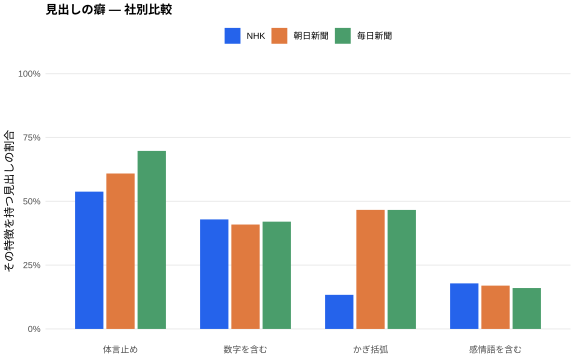

数値
| 社 | 見出し数 | 平均文字数 | 体言止め | 数字 | かぎ括弧 | 感情語 |
|---|---|---|---|---|---|---|
| NHK | 107 | 27.2 | 54% | 43% | 10% | 19% |
| 朝日新聞 | 179 | 31.4 | 62% | 44% | 47% | 18% |
| 毎日新聞 | 255 | 30.1 | 68% | 39% | 47% | 18% |
- 体言止め
- 末尾の記号・空白を除いた最後の文字がひらがな以外(漢字・カタカナ・英数字)である見出しの割合。
- 数字
- 半角に正規化したあとアラビア数字を含む見出しの割合(漢数字は数えません)。
- かぎ括弧
- 「」または『』を含む見出しの割合。発言の引用や語の強調に使われます。
- 感情語
- 感情辞書(419 語)の語を含む見出しの割合。辞書は姉妹プロジェクト kokoro-graph の自前辞書 v1.1.0 を固定コピーしたものです。
- 注意
- 各社でフィードの性格(速報中心か、解説を含むか)や収録件数が異なるため、この数値は文体の傾向を示すもので、優劣を示すものではありません。
- 出典・観測期間
- NHK ニュース・朝日新聞・毎日新聞の各 RSS。2026-08-19 14:48:00 〜 2026-08-21 21:44:00(UTC)。